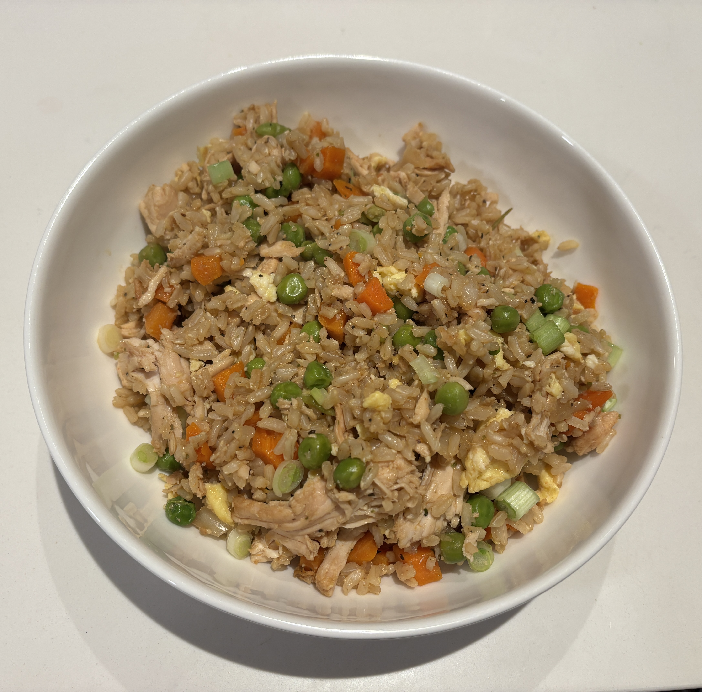

Home
Fried Rice

Ingredients
- 1 small onion chopped
- 1 lb cooked meat (or extra eggs)
- 1 1/2 cup frozen peas and carrots thawed
- 4 cups cooked white rice
- 1/3 cup soy sauce
- 3 large eggs whisked
- Chopped scallions
- 3 tbsp butter
Steps
- Over high heat add nonstick cooking spray to wok or large nonstick skillet. Add onion and cook until fragrent about 1 min.
- Fold in meat if desired and defrosted peas and carrots for 2 min.
- Fold in cooked white rice and soy sauce and cook for 2 min until liquid evaporates.
- Reduce the heat to medium and push the rice to one side of teh wok. Spray the open side of the pan with cooking spray and add the whisked large eggs to the empty side. Let sit 30 seconds or until eggs start to set around the edges. Then gently scramble until cooked for 1 to 2 min.
- Add butter and stir to combine rice and eggs. Garnish with scallions and serve immediately.